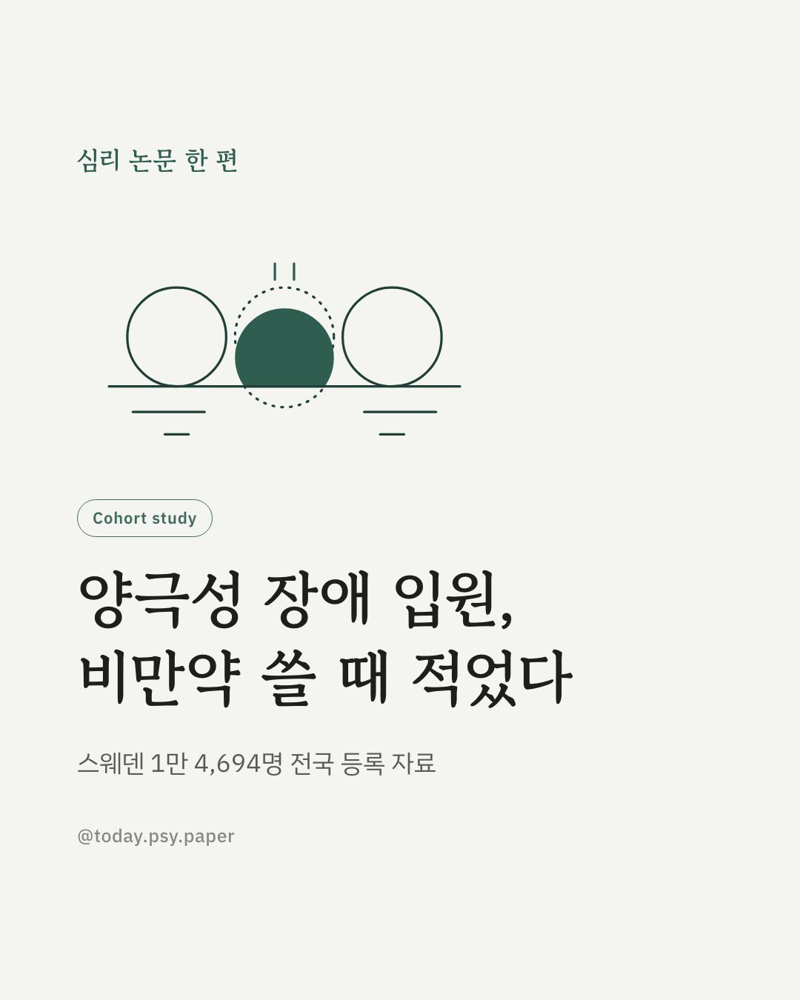
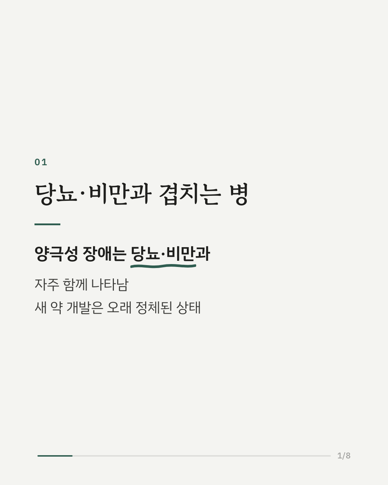
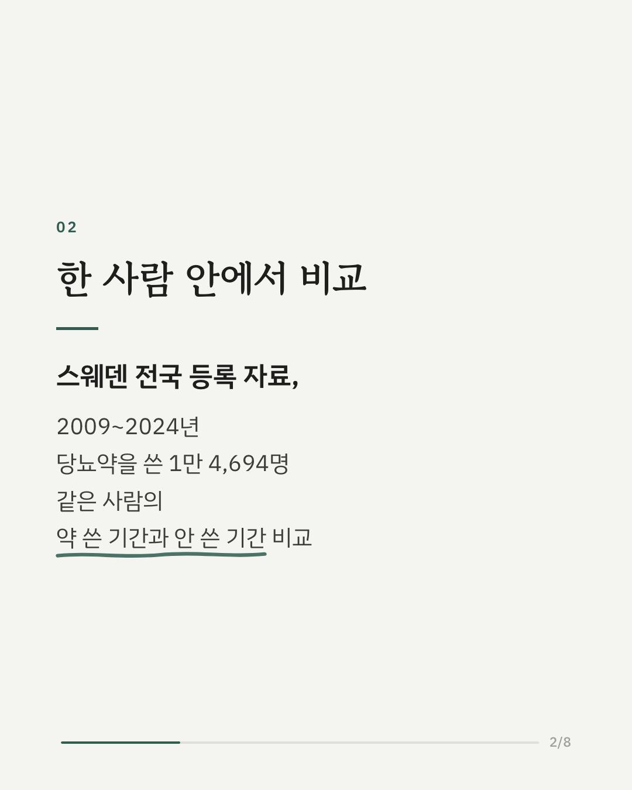
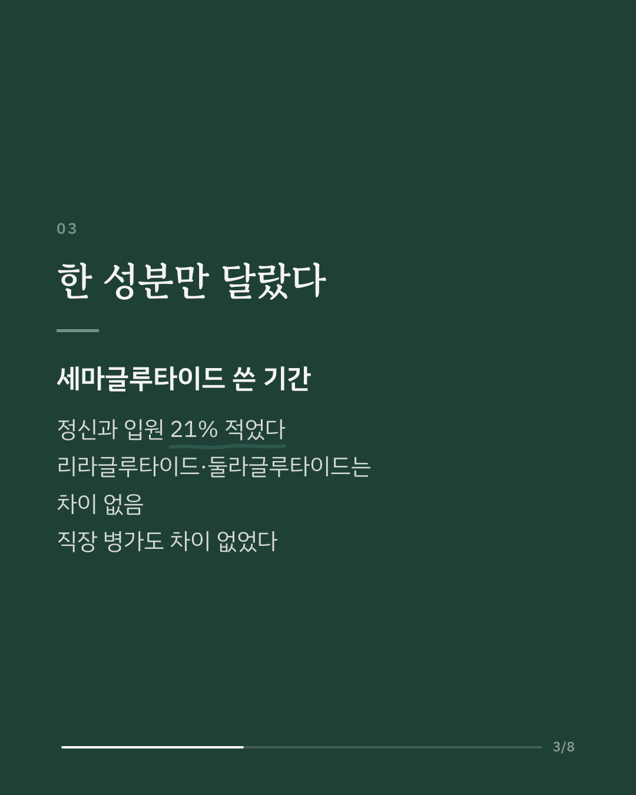
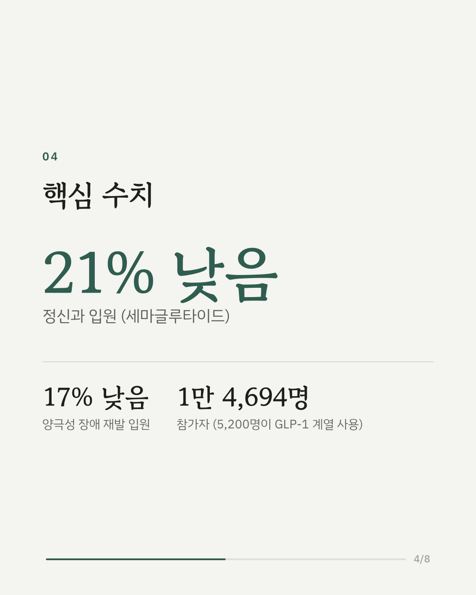
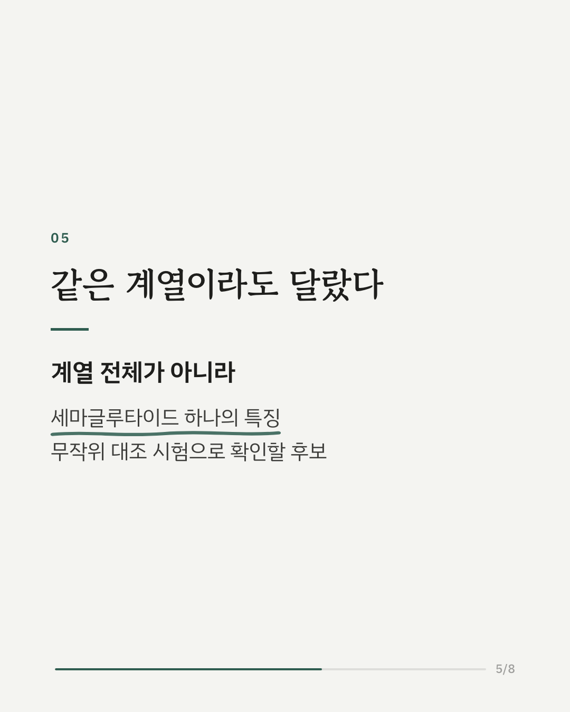
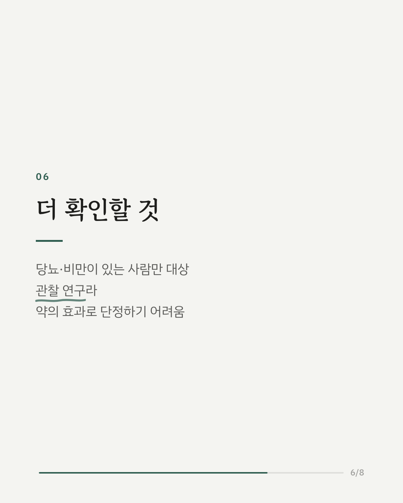
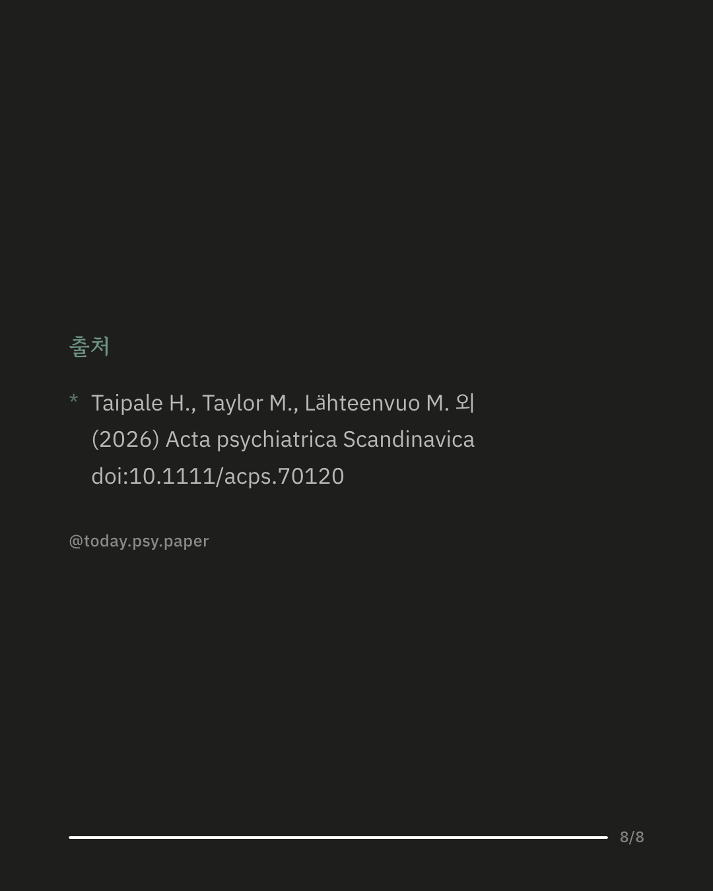

양극성 장애가 있는 사람은 당뇨와 비만을 함께 겪는 경우가 많습니다. 스웨덴 연구진은 전국 등록 자료로 2009~2024년 당뇨약을 쓴 양극성 장애 환자 1만 4,694명을 살폈습니다. 같은 사람 안에서 GLP-1 계열 약(세마글루타이드 등)을 쓴 기간과 쓰지 않은 기간을 비교해, 사람마다 다른 배경의 영향을 줄였습니다. 세마글루타이드를 쓴 기간에는 정신과 입원이 21%, 양극성 장애 재발로 인한 입원이 17% 적었습니다. 같은 계열인 리라글루타이드와 둘라글루타이드에서는 이런 차이가 없었고, 정신과 사유의 병가도 약에 따라 달라지지 않았습니다. 연구진은 계열 전체가 아닌 세마글루타이드만의 특징일 수 있다며 무작위 대조 시험으로 확인해야 한다고 밝혔습니다. 당뇨나 비만이 함께 있는 사람만 대상이었기 때문에, 이 조건이 없는 양극성 장애 환자에게도 같은 결과가 나올지는 알 수 없습니다. 출처: Acta Psychiatrica Scandinavica (2026), 'Use of Glucagon-Like Peptide 1 Receptor Agonists and the Associated Risk of Hospitalisation in Bipolar Disorder, From a Nationwide Cohort, 2009-2024.' DOI: 10.1111/acps.70120 #양극성장애 #조울증 #세마글루타이드 #비만치료제 #정신과약물 #임상심리 #정신건강정보 #논문리뷰
python3 publish.py 42324672